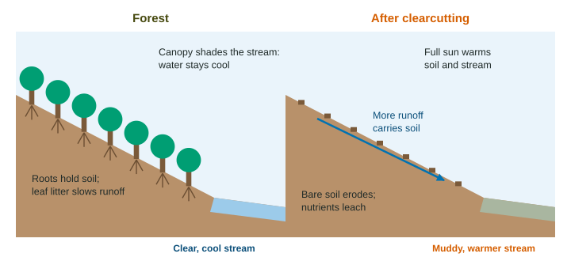

Clearcutting
Clearcutting cuts every tree in an area: it is the cheapest way to harvest timber, but it bares the soil to erosion, fills streams with sediment, warms them so they hold less dissolved oxygen, washes out nutrients, and removes habitat and stored carbon.
Part 1 · Hook
Why this matters
Part 2 · Before you start
What this builds on
Part 3 · Prerequisite check
Quick check before you start
1. What is erosion?
- The movement of soil and rock by water, wind or ice
- The breakdown of rock in place by weather
- The buildup of humus in the top layer of soil
- The sinking of water into the ground
Show the answer
Erosion moves soil away; weathering breaks rock down in place.
- Correct: The movement of soil and rock by water, wind or ice:
- The breakdown of rock in place by weather:
- The buildup of humus in the top layer of soil:
- The sinking of water into the ground:
2. How does warmer stream water affect dissolved oxygen?
- Warmer water holds less dissolved oxygen
- Warmer water holds more dissolved oxygen
- Temperature has no effect on dissolved oxygen
- Warmer water holds oxygen only at night
Show the answer
Gases dissolve less in warm water, so warm water holds less oxygen for fish.
- Correct: Warmer water holds less dissolved oxygen:
- Warmer water holds more dissolved oxygen:
- Temperature has no effect on dissolved oxygen:
- Warmer water holds oxygen only at night:
3. Forests store carbon mainly in which form?
- Carbon in wood, leaves, roots and soil
- Carbon dioxide gas held inside the trees
- Methane gas trapped under the forest floor
- Carbon only in the leaves that fall each year
Show the answer
Photosynthesis turns carbon dioxide into the carbon compounds of wood and other tissue.
- Correct: Carbon in wood, leaves, roots and soil:
- Carbon dioxide gas held inside the trees:
- Methane gas trapped under the forest floor:
- Carbon only in the leaves that fall each year:
Part 4 · See it
See it first

Part 5 · Step by step
How it works, step by step
- All trees on a slope are cutroots die and leaf litter is removed, so the soil is bare
- Rain falls on bare soilmore water runs off and carries soil (sediment) into the stream
- Sediment clouds the water and covers the gravelless light reaches algae and fish eggs are smothered
- The canopy no longer shades the streamthe water warms and holds less dissolved oxygen, so cold-water fish decline
Part 6 · Key ideas
Key ideas
- Clearcutting removes all the trees in an area at once. It is cheap and fast, and some tree species that need full sun regrow well afterward.
- Costs: soil erosion, sediment in streams, warmer streams with less dissolved oxygen, nutrients washed out of the soil, more runoff and flooding, and lost habitat.
- Forests are a carbon sink. Cutting and burning or decaying the wood releases carbon dioxide, and the cleared land takes up less until trees regrow.
- Deforestation is the lasting loss of forest, as when land is cleared for farms, pasture, mines or towns.
Part 7 · Misconception
A common mistake
The wrong idea: Trees store carbon dioxide, so cutting them lets that gas escape.
What actually happens: Trees store carbon, in wood, leaves and roots. When the wood burns or decays, that carbon combines with oxygen and enters the air as carbon dioxide.
Part 8 · Check yourself
Check yourself
Exam-style questions. Anything you miss goes into your review queue.
1. What is clearcutting?
- Cutting all or nearly all the trees in an area at one time
- Cutting just the largest trees and leaving the rest standing
- Burning the brush on the forest floor while keeping the large trees
- Removing the tree branches that hang over roads and power lines
Show the answer
Clearcutting removes every tree, or nearly every tree, from an area in one harvest.
- Correct: Cutting all or nearly all the trees in an area at one time: Right: all the trees come down at once.
- Cutting just the largest trees and leaving the rest standing: Taking only some trees is a different method, covered later in this unit.
- Burning the brush on the forest floor while keeping the large trees: Burning brush under standing trees is not a harvest of timber at all.
- Removing the tree branches that hang over roads and power lines: Trimming branches is not logging; the trees stay alive and standing.
2. After a hillside is clearcut, the stream below it becomes muddy after storms. What causes this?
- Rain falls on bare soil, runs off, and carries soil into the stream
- Fallen leaves from the cut trees dissolve in the water and turn it brown
- The stumps release mud into the stream as they decay over the years
- Logging machines pump water from the stream and stir up its bottom
Show the answer
Without roots and leaf litter, rain runs off bare soil and carries sediment with it.
- Correct: Rain falls on bare soil, runs off, and carries soil into the stream: Right: runoff from bare soil carries sediment.
- Fallen leaves from the cut trees dissolve in the water and turn it brown: Clearcutting removes most leaf litter; brown muddy water is soil, not dissolved leaves.
- The stumps release mud into the stream as they decay over the years: Slowly decaying stumps add little; the mud comes from eroded soil.
- Logging machines pump water from the stream and stir up its bottom: Loggers do not pump streams; the sediment is washed in by rain.
Data
Two small watersheds, one clearcut
| Measurement | Forested watershed | Clearcut watershed |
|---|---|---|
| Water temperature (°C) | 13 | 18 |
| Dissolved oxygen (mg/L) | 10.4 | 9.0 |
| Sediment carried (kg per hectare per year) | 40 | 260 |
| Nitrate in stream water (mg/L) | 0.2 | 1.8 |
| Trout counted per 100 m of stream | 24 | 6 |
3. Which pair of measurements in the table shows the warmer stream also had less dissolved oxygen?
- 18 °C with 9.0 mg/L, compared with 13 °C with 10.4 mg/L
- 13 °C with 9.0 mg/L, compared with 18 °C with 10.4 mg/L
- 40 kg of sediment with 1.8 mg/L of nitrate in the same stream
- 24 trout per 100 m with 260 kg of sediment in the same stream
Show the answer
The clearcut stream was 18 °C with 9.0 mg/L of oxygen; the forested stream was 13 °C with 10.4 mg/L.
- Correct: 18 °C with 9.0 mg/L, compared with 13 °C with 10.4 mg/L: Right: higher temperature goes with lower dissolved oxygen.
- 13 °C with 9.0 mg/L, compared with 18 °C with 10.4 mg/L: These values are mixed up between the two streams.
- 40 kg of sediment with 1.8 mg/L of nitrate in the same stream: 40 kg is the forested stream and 1.8 mg/L is the clearcut stream; these are from different columns.
- 24 trout per 100 m with 260 kg of sediment in the same stream: 24 trout is the forested stream and 260 kg is the clearcut stream.
4. Write the setup for the percent change in sediment carried when going from the forested watershed to the clearcut one, then give the answer.
Type the setup as on the exam, with brackets and units, then the answer.
Show the answer
- Setup: ; answer 550 %
5. Nitrate in the clearcut stream was 9 times higher. Which explanation fits best?
- With the trees gone, no roots take up nitrate, so it leaches from the soil into the stream
- The clearcut stream got more nitrate from rain, which falls mostly on cleared land
- Trout in the clearcut stream make nitrate faster as their numbers fall
- Warm water turns dissolved oxygen into nitrate in the clearcut stream
Show the answer
Living roots take up nitrate. When they die, nitrate in the soil is not used and washes (leaches) into the stream.
- Correct: With the trees gone, no roots take up nitrate, so it leaches from the soil into the stream: Right: no uptake by roots, so nitrate leaches out.
- The clearcut stream got more nitrate from rain, which falls mostly on cleared land: Rain falls on both watersheds alike.
- Trout in the clearcut stream make nitrate faster as their numbers fall: Fewer trout would add less waste, not more.
- Warm water turns dissolved oxygen into nitrate in the clearcut stream: Oxygen does not turn into nitrate; nitrate comes from the nitrogen cycle in soil.
6. Using the table, explain why there were fewer trout in the clearcut stream.
Build the answer part by part, then write it in your own words.
Show the answer
A complete chain names each link: the trees are gone, the stream is unshaded and warms (13 to 18 °C), warm water holds less oxygen (10.4 to 9.0 mg/L), and trout, which need cold water rich in oxygen, decline (24 to 6 per 100 m).
- An answer that earns the point: Because the stream lost the shade of the trees, the water warmed from 13 to 18 °C, so it held less dissolved oxygen (9.0 instead of 10.4 mg/L), and trout, which need cold water with a lot of oxygen, fell from 24 to 6 per 100 m.
7. Some foresters argue that clearcutting can help certain tree species regrow. Which statement best supports their argument?
- Some trees need full sunlight to grow from seed, and a clearcut gives them that light
- Clearcuts keep the soil shaded, so seedlings of shade-loving trees are protected
- Each tree species regrows faster after clearcutting than after any other harvest
- Clearcutting adds nutrients to the soil, so each seedling grows faster than before
Show the answer
Sun-loving species (some pines, aspen, Douglas-fir) grow poorly in shade. A clearcut opens the ground to full sun, a little like a natural fire or windstorm.
- Correct: Some trees need full sunlight to grow from seed, and a clearcut gives them that light: Right: sun-loving species regrow well in the open.
- Clearcuts keep the soil shaded, so seedlings of shade-loving trees are protected: A clearcut removes the shade, so it favors sun-loving species, not shade-loving ones.
- Each tree species regrows faster after clearcutting than after any other harvest: Not every species does better; shade-tolerant trees often do worse.
- Clearcutting adds nutrients to the soil, so each seedling grows faster than before: Clearcutting usually washes nutrients out of the soil.
Part 9 · Summary
Summary
Part 10 · Up next
What comes next
Part 11 · Connections